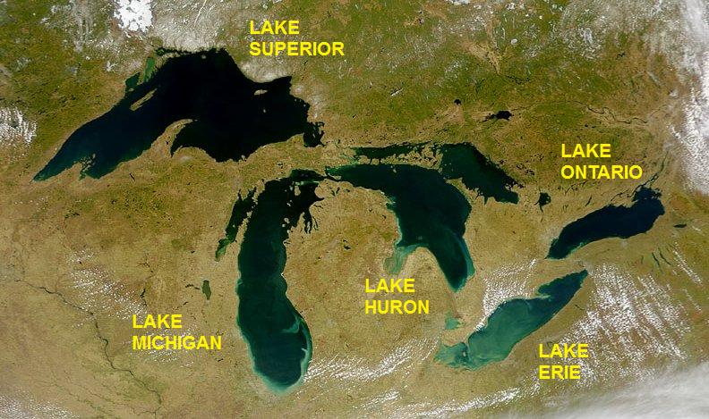

This website is part of a final project for Data Analytics Bootcamp offered through University of Toronto School of Continuing Studies.
Our group has found 2 data sources (as excel files) from the Ontario Data Catalogue which is the year round water chemistry for the Great Lakes; specifically Lake Superior, Lake Huron, Lake Erie and Lake Ontario. The first and second data sources are provided as links.

The province of Ontario has the majority of its drinking water sourced from the 4 great lakes.
With the data sources from the Ontario Data Catalogue our group was able to use 4 machine learning models on cleaned data to predict the potential source of a water sample based on up to the value for 25 parameters.
If you wish to enter you own predictions please go to the ML input page.
Please explore the Navigation Bar and view our Leaflet visualization of all testing stations and Plot.ly visualization of our parameters over time.
You can also travel to our API and make custom queries if you wish.
Daniel Adam Cebula is a analytical chemist experienced in elemental analysis over 4 years. Daniel is currently pursuing Data analytics course to improve his data handling techniques, learn new skills in analysing data and visualizing it.
Rohan Chaudhari is an advertising professional, experienced in traditional and programmatic marketing over 5 yrs, currently pursuing Data analytics course to imrove his skillsets in analysing data and visualising it.